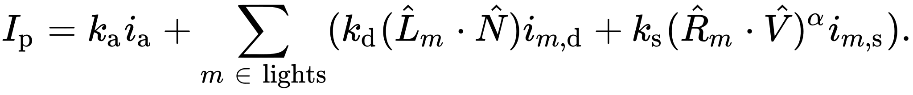
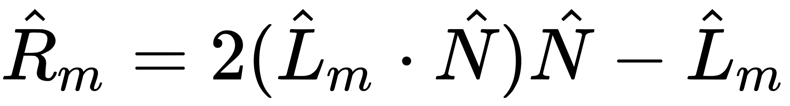
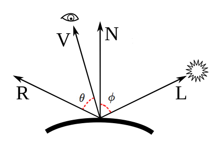
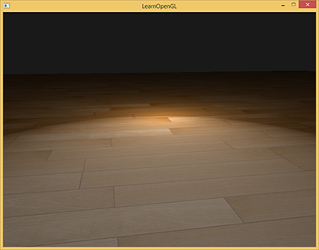
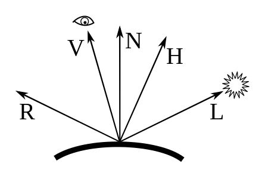
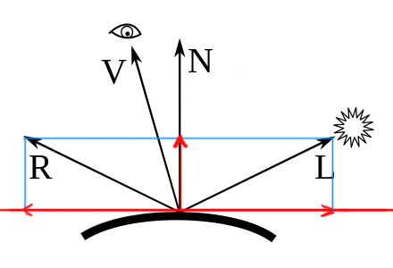

光照模型一般按照真实感和非真实感，分2大类；在真实感类里，再细分经验模型和基于物理的模型。
本文将不断更新关于各种光照模型的内容。
- 真实感
- Phong(经验模型)
- Blinn-Phong(经验模型)
- Lafortune
- Torrance-Sparrow
- Cook-Torrance（基于物理）
- Ward anisotropy
- Oren-Nayar
- 非真实感
- Cel shading
- Gooch shading
列表来源: List of common shading algorithms
Phong lighting model （1975年）
Phong模型是针对局部光照的经验模型。先过一遍原理，从wiki给出的2条公式入手：


（第二条公式在本文最后面补充了推导过程）
解释下里面的各个符号：
- \(k_{s} \)，镜面反射系数，常量
- \(k_{d} \)，漫反射系数，常量
- \(k_{\alpha } \)，环境光反射系数，常量
- \(\alpha \) , 表示物体材质光滑程度，由材质决定（材质越光滑系数越大），常量
- \(\hat L_{m} \)，从物体表面上的p点到某光源m的方向向量
- \(\hat N \)，该点的法线
- \(\hat R_{m} \)，出射(反射)光线的方向，相对于\(\hat L_{m} \)而言的。也是从物体表面出发
- \(\hat V \)，摄像机的方向，也是从物体表面出发
- \(i_{\alpha } \)，环境光光照，理解为RGB颜色即可（i表示illumination）
- \(i_{m,d } \)，光源m的漫反射光照, RGB
- \(i_{m,s } \)，光源m的镜面反射光照，RGB
- \(I_{p } \)，p点的总的光照，RGB
直观地理解这些方向

公式中只有2个东西是要特别说明的：
- \(\hat L_{m}\cdot \hat N \)即\( cos \phi \)，夹角越小，cos值越大，反射光越强，这个N和L的点积关系式被称为Lambert's Cosine Law；
- \( (\hat R_{m}\cdot V )^{\alpha } \)即\( cos ^{\alpha } \theta \)，夹角越小，说明反射光方向和视角方向越靠近，对于光滑平面，显然越靠近越亮，Phong用了一个乘方运算来模拟亮度的急剧变化；
根据公式可知，Phong模型实质上是三个小模型的叠加：
- ambient lighting：环境光，模拟像月光这种弱光对物体的影响，特点是物体各个面的"颜色"是一样的。
- diffuse lighting：漫反射光，被(直接)光源照射后反射出来的光，特点是根据面的法线和光纤方向的关系，每个面的“颜色”会不同。
- specular lighting：镜面光，模拟了光滑物体或物体的部分光滑表面被光照时产生的高光现象
除此之外，还有一个object color的概念，是指物体自发光，一般是用纹理表示这种color。

(from wiki)
下面给出单光源下的phong shader。
ambient lighting
// fs
void main()
{
float ka = 0.1;
vec3 ambient = ka * lightColor;
vec3 result = ambient * objectColor;
FragColor = vec4(result, 1.0);
}
ambient+diffuse lighting
// vs
void main()
{
gl_Position = projection * view * model * vec4(aPos, 1.0);
FragPos = vec3(model * vec4(aPos, 1.0));
Normal = aNormal;
}
// fs
void main()
{
float ka = 0.1;
vec3 ambient = ka * lightColor;
float kd = 1.0;
vec3 N = normalize(Normal);
vec3 L = normalize(lightPos - FragPos);
float NdotL = max(dot(N, L), 0.0);
vec3 diffuse = kd * NdotL * lightColor;
vec3 result = (ambient + diffuse) * objectColor;
FragColor = vec4(result, 1.0);
}
ambient+diffuse+specular lighting
// vs
void main()
{
gl_Position = projection * view * model * vec4(aPos, 1.0);
FragPos = vec3(model * vec4(aPos, 1.0));
Normal = aNormal;
}
// fs
void main()
{
float ka = 0.1;
vec3 ambient = ka * lightColor;
float kd = 1.0;
vec3 N = normalize(Normal);
vec3 L = normalize(lightPos - FragPos);
float NdotL = max(dot(N, L), 0.0);
vec3 diffuse = kd * NdotL * lightColor;
float ks = 0.5;
float alpha = 32;
vec3 V = normalize(viewPos - FragPos);
vec3 R = reflect(-L, N);
float spec = pow(max(dot(V, R), 0.0), alpha);
vec3 specular = ks * spec * lightColor;
vec3 result = (ambient + diffuse + specular) * objectColor;
FragColor = vec4(result, 1.0);
}
Blinn-Phong (1977年)
Blinn-Phong模型简单来说只是对Phong模型的改进。既然是改进，那么就得先搞清楚改进了什么问题：在Phong模型中，R和V的夹角不能超过90度，超过90度，cos就会变负数，进而会出现光照错误。
例如说观察者站在平面上观察平面远处的某点（V会贴近地面），且同时有一个方向光源光照方向L和V接近，那么L的镜像R，就和V形成钝角，就光照错误了。例如这样：

(from learnopengl.com)
既然钝角不好，那么有什么办法弄成锐角？答案是定义一个新的向量H（halfway vector）：
\[ \hat H = \frac {L + V}{ |L + V| } \]

H和高光的关系是：H越靠近法线N，镜像高光就越强。
另外，因为H和N的夹角会比V和R的夹角小（从图中也可以看出来），于是shineness因子（即\(\alpha \)）得变得更大，一般是Phong模型时的2到4倍。
总之，Blinn-Phong其实只是改进了Phong高光的模拟部分，其他部分不变。Phong公式的高光部分改动如下：
\[ k_{s}(\hat N\cdot \hat H)^{\alpha } i_{m,s} \]
对应的shader如下：
// vs
void main()
{
gl_Position = projection * view * model * vec4(aPos, 1.0);
FragPos = vec3(model * vec4(aPos, 1.0));
Normal = aNormal;
}
// fs
void main()
{
float ka = 0.1;
vec3 ambient = ka * lightColor;
float kd = 1.0;
vec3 N = normalize(Normal);
vec3 L = normalize(lightPos - FragPos);
float NdotL = max(dot(N, L), 0.0);
vec3 diffuse = kd * NdotL * lightColor;
float ks = 0.5;
float alpha = 32;
vec3 V = normalize(viewPos - FragPos);
vec3 H = normalize(L + V);
float spec = pow(max(dot(N, H), 0.0), alpha);
vec3 specular = ks * spec * lightColor;
vec3 result = (ambient + diffuse + specular) * objectColor;
FragColor = vec4(result, 1.0);
}
learnopengl.com给出的前后对比图：

补充
反射公式的推导
解释下这条公式怎么得到。首先看图：

先以切平面和法线为坐标轴，对L做投影分解。L到N的投影为：
\[ L_{\parallel } = (L\cdot N)N \]
根据向量加法可以得到：
\[ L_{\perp } = L - L_{\parallel } = L - (L\cdot N)N \]
又因为R关于N和L镜像对称，于是可以得到R的公式：
\[ R = -L_{\perp } + L_{\parallel } \]
\[ R = -(L - (L\cdot N)N) + (L\cdot N)N \]
\[ R = -L + 2(L\cdot N)N \]
\[ R = 2(L\cdot N)N - L \]
参考资料
https://learnopengl.com/Lighting/Basic-Lighting
https://learnopengl.com/Advanced-Lighting/Advanced-Lighting
https://math.stackexchange.com/questions/13261/how-to-get-a-reflection-vector
https://en.wikipedia.org/wiki/Specular_reflection#Direction_of_reflection
http://maverick.inria.fr/~Nicolas.Holzschuch/cours/Slides/1b_Materiaux.pdf
https://www.scratchapixel.com/lessons/3d-basic-rendering/phong-shader-BRDF
博主将十分感谢对本文章的任意金额的打赏^_^